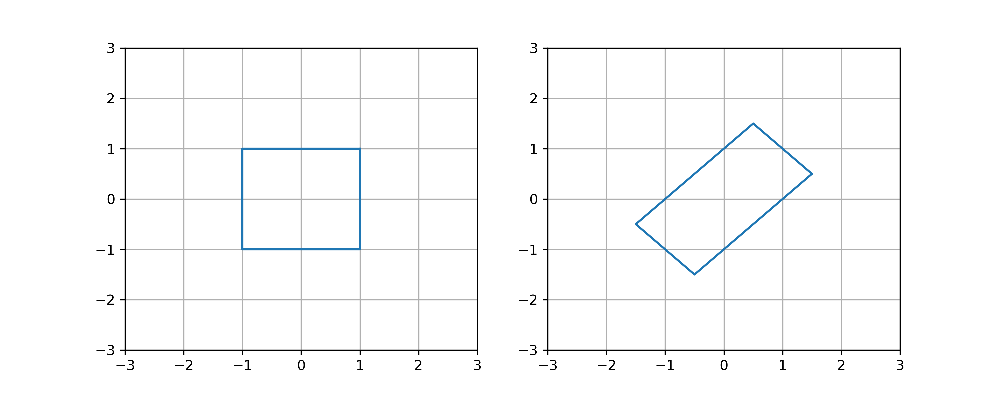
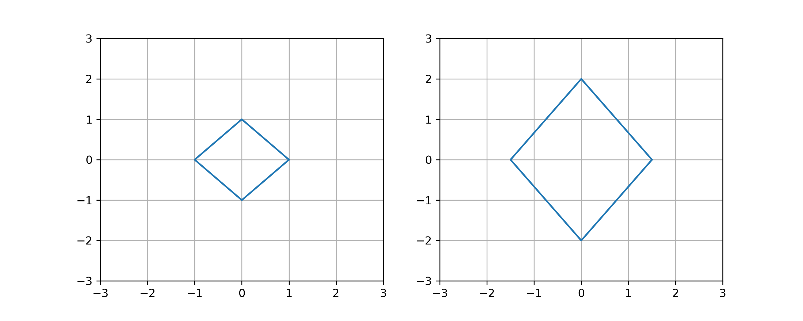

Vector and Matrix Norms¶
Norms provide different ways of describing the magnitude of a vector or matrix. The length of a vector \(\| \boldsymbol{x} \|_2 = \sqrt{x_1^2 + \cdots + x_n^2}\) is called the 2-norm but there are infinitely many other norms like the 1-norm and \(\infty\)-norm. The norm \(\| A \|\) of a matrix \(A\) quantifies how much \(A\) stretches vectors.
A norm on the vector space \(\mathbb{R}^n\) is a function \(\| \cdot \|\) such that:
\(\| \boldsymbol{x} \| \geq 0\) for all \(\boldsymbol{x} \in \mathbb{R}^n\)
\(\| \boldsymbol{x} \| = 0\) if and only if \(\boldsymbol{x} = \boldsymbol{0}\)
\(\| c \boldsymbol{x} \| = |c| \| \boldsymbol{x} \|\) for any \(c \in \mathbb{R}\) and \(\boldsymbol{x} \in \mathbb{R}^n\)
\(\| \boldsymbol{x} + \boldsymbol{y} \| \leq \| \boldsymbol{x} \| + \| \boldsymbol{y} \|\) for all \(\boldsymbol{x} , \boldsymbol{y} \in \mathbb{R}^n\)
Condition 4 is called the triangle inequality. See Wikipedia:Norm.
Let \(\boldsymbol{x} \in \mathbb{R}^n\).
The 2-norm (also called the \(\ell_2\)-norm) is given by the familiar formula
\[ \| \boldsymbol{x} \|_2 = \sqrt{ | x_1|^2 + \cdots + | x_n |^2 } = \sqrt{ \sum_{k=1}^n | x_k |^2 } \]More generally, the \(p\)-norm (also called the \(\ell_p\)-norm) is given by
\[ \| \boldsymbol{x} \|_p = \left( \sum_{k=1}^n | x_k |^p \right)^{1/p} \]For example, a commonly used norm is the 1-norm
\[ \| \boldsymbol{x} \|_1 = | x_1| + \cdots + | x_n | = \sum_{k=1}^n | x_k | \]The \(\infty\)-norm (also called the \(\ell_\infty\)-norm) is given by
\[ \| \boldsymbol{x} \|_{\infty} = \max_k | x_k | \]
The Frobenius norm of a matrix \(A\) (also called the Hilbert-Schmidt norm) is given by
Let \(D\) be a diagonal matrix and let \(\boldsymbol{d}\) be the vector of diagonal entries of \(D\):
Then \(\|D\|_{\rm FR} = \| \boldsymbol{d} \|_2\).
Choose a vector norm \(\| \cdot \|\). The matrix norm (with respect to the vector norm \(\| \cdot \|\)) is
Note that \(\| A \boldsymbol{x} \| / \| \boldsymbol{x} \|= \| A ( \boldsymbol{x} / \| \boldsymbol{x} \| ) \|\) therefore
In other words, the matrix norm is the maximum stretch of a unit vector by the linear transformation \(A\). The matrix norm is also called the operator norm.
We almost always use the 2-norm when defining the matrix norm. Therefore
is the matrix norm with respect to the 2-norm unless a different vector norm is explicitly stated.
Let \(D\) be a diagonal matrix and let \(\boldsymbol{d}\) be the vector of diagonal entries of \(D\):
Then \(\|D\|_2 = \| \boldsymbol{d} \|_{\infty}\).
A matrix norm satisfies the properties:
\(\| A \| > 0\) for all \(A \not= 0\)
\(\| A \| = 0\) if and only \(A = 0\)
\(\| c A \| = |c| \| A \|\) for any \(c \in \mathbb{R}\)
\(\| A + B \| \leq \| A \| + \| B \|\)
\(\| A B \| \leq \| A \| \| B \|\)
\(\| A \boldsymbol{x} \| \leq \| A \| \| \boldsymbol{x} \|\) for any \(\boldsymbol{x} \in \mathbb{R}^n\)
Exercises¶
Prove that the \(\infty\)-norm satisfies the required properties of a norm.
Sketch the “unit ball” in \(\mathbb{R}^2\) for each norm:
\[\begin{split} \begin{align*} B_1 &= \{ \mathbf{x} \in \mathbb{R}^2 : \| \boldsymbol{x} \|_1 = 1 \} \\ B_2 &= \{ \mathbf{x} \in \mathbb{R}^2 : \| \boldsymbol{x} \|_2 = 1 \} \\ B_{\infty} &= \{ \mathbf{x} \in \mathbb{R}^2 : \| \boldsymbol{x} \|_{\infty} = 1 \} \end{align*} \end{split}\]Which set of inequalities is always true? Explain.
\[ \| \boldsymbol{x} \|_1 \leq \| \boldsymbol{x} \|_2 \leq \| \boldsymbol{x} \|_{\infty} \hspace{5mm} \text{or} \hspace{5mm} \| \boldsymbol{x} \|_1 \geq \| \boldsymbol{x} \|_2 \geq \| \boldsymbol{x} \|_{\infty} \]Determine whether the statement is True or False.
If \(\boldsymbol{x} \in \mathbb{R}^n\) such that \(\| \boldsymbol{x} \|_1 = \| \boldsymbol{x} \|_{\infty} = \lambda\) then \(\| \boldsymbol{x} \|_p = \lambda\) for any \(p > 1\).
Define \(\| \boldsymbol{x} \|_0 = \sum_{k=1}^n x_k^2\) for any \(\boldsymbol{x} = \begin{bmatrix} x_1 & \cdots & x_n \end{bmatrix}^T \in \mathbb{R}^n\). Then \(\| \boldsymbol{x} \|_{0}\) is a norm.
Define \(\| \boldsymbol{x} \|_{\min} = \min_k | x_k |\) for any \(\boldsymbol{x} = \begin{bmatrix} x_1 & \cdots & x_n \end{bmatrix}^T \in \mathbb{R}^n\). Then \(\| \boldsymbol{x} \|_{\min}\) is a norm.
Suppose \(\boldsymbol{x} = \begin{bmatrix} 1 & 2 & 2 & c & 1 & 1 \end{bmatrix}^T \in \mathbb{R}^6\) such that \(\| \boldsymbol{x} \|_{3} = 3\). Find all possible values \(c\).
Suppose \(\boldsymbol{x} = \begin{bmatrix} 1 & 3 & 2 & 2 & c & 2 & 1 & 2 \end{bmatrix}^T \in \mathbb{R}^8\) such that \(\| \boldsymbol{x} \|_{3} = 5\). Find all possible values \(c\).
Suppose \(\boldsymbol{x} = \begin{bmatrix} 1 & 0 & 2 & c & -1 \end{bmatrix}^T \in \mathbb{R}^5\) such that \(\| \boldsymbol{x} \|_1 = 5\). Find all possible values \(c\).
Suppose \(\boldsymbol{x} = \begin{bmatrix} 1 & 0 & 2 & c & -1 \end{bmatrix}^T \in \mathbb{R}^5\) such that \(\| \boldsymbol{x} \|_{\infty} = 5\). Find all possible values \(c\).
Suppose \(A\) is a 2 by 2 matrix such that the image of the unit square under the linear transformation \(A\) is:

Determine \(\mathrm{cond}_{\infty}(A)\) (the condition number with respect to the \(\infty\)-norm).
Suppose \(A\) is a 2 by 2 matrix such that the image of the unit “diamond” under the linear transformation \(A\) is:

Determine \(\mathrm{cond}_1(A)\) (the condition number with respect to the 1-norm).